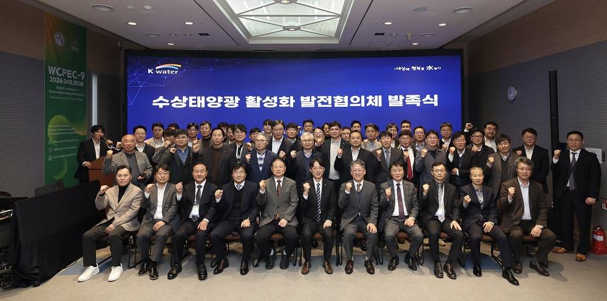

수자원공사, 50여 개 기관과 수상태양광 협의체 출범…2030년까지 10곳 500MW 개발

정책제언·기술시공·기자재 3개 분과, 반기마다 정기회의 / 첫 안건은 수상구조물 성능·평가 기준
한국수자원공사가 공공기관·기업·학계·연구기관 50여 곳과 함께 '수상태양광 활성화 발전협의체'를 꾸리고 11월 18일 대전 유성구 대전컨벤션센터에서 발족식을 열었다. 협의체는 정책제언·기술시공·기자재 3개 분과로 상시 운영되며, 위원장이 주재하는 정기회의를 반기마다 열고 필요할 때 총괄위원이 수시회의를 연다.
인허가 규제를 손보고 제도를 고치는 일은 정책제언 분과가, 사업비를 줄이고 설계·시공을 표준화하며 안전을 챙기는 일은 기술시공 분과가 맡는다. 기자재 분과는 고효율 모듈과 새 계류방식(물에 뜬 구조물을 고정하는 방식)의 기술 개발과 국산화를 다룬다. 발족식 자리에서 운영규정과 분과장 인선을 마쳤고, 한국건설생활환경시험연구원(KCL)과는 첫 안건인 수상구조물 성능·평가 기준 마련을 놓고 논의했다.
수자원공사는 현재 7곳에서 수상태양광 105.6MW를 운영하고 있고, 9월 비전선포식에서 소양강댐 95MW를 시작으로 2030년까지 10곳 500MW를 개발하겠다고 밝혔다.
시민에너지 관점
댐과 저수지 수면은 공공의 자산이다. 2021년 11월 발전 개시 기념행사를 연 합천댐 수상태양광(41.5MW)은 지역 주민이 투자자로 참여해 20년간 고정 수익을 받는 구조로 만들어졌다. 그런데 50여 개 기관이 모인 이번 협의체는 규제·시공·기자재 분과만 두었고, 주민 참여와 이익 공유를 다루는 분과는 따로 두지 않았다. 2030년까지 개발할 10곳 500MW에도 댐 주변 주민과 지역 협동조합이 출자하고 수익을 나누는 방식을 기본으로 넣고, 정책제언 분과가 그 제도를 함께 설계해야 한다.
출처: 한국수자원공사 2026-11-18 보도자료 「한국수자원공사, 민·관·학·연 50여 개 기관과 ‘수상태양광 활성화 발전협의체’ 출범」(에너지사업처 태양광사업1부) 원문 보기
출처: 환경부(정책브리핑) 2021-12-21 「국내 최대규모 합천댐 수상태양광 발전개시…기대효과는?」 원문 보기